L7 - AM and FM Receivers#
AM and FM Receivers
We build FM and AM receivers and compare the two in noise.
Lesson 7 · Module 3: Analog Modulation · Dr. Neil Rogers
Slides
Learning Objectives
- I can implement an FM receiver in GNU Radio, demodulate a live broadcast FM signal, and decode its RDS data.
- I can explain and demonstrate the trade-off between bandwidth and noise performance for AM vs. FM.
Two Stations in a Capture
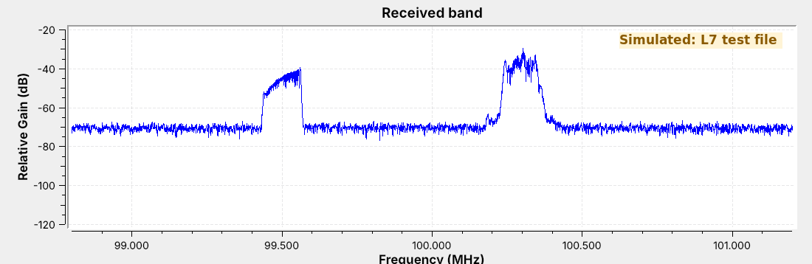
The capture holds two FM stations in 2.4 MHz of IQ samples.
Today we get audio from one of them, and its station name.
In the L5 Lab you recorded a few seconds of the FM band to fm_capture.cfile. The figure is a file of the same kind: 2.4 million complex samples per second around 100.0 MHz, holding a station at 100.3 MHz and a weaker one at 99.5 MHz. It came from a GNU Radio flowgraph rather than an antenna, so the figure carries a “Simulated” label. The station at 100.3 MHz carries a two-tone message, the L6 message of 1 kHz and 2.5 kHz, and its name, “ECE 448”, in RDS data.
By the end of the lesson we will turn that file into audio, read the station’s name out of it, and then point the same flowgraph at the live band. We will also build an AM receiver for the aircraft band and compare AM and FM in the same noise.

The test file comes from L07-fm-test-tx.grc. It builds each station the way a broadcaster does, with pre-emphasis, an RDS encoder from gr-rds, and levels set for 75 kHz of deviation, about 71 kHz at the peaks of this audio, then adds noise and writes 4 s of samples, 76.8 MB, to L07-fm-test.cfile. Nothing in it transmits: its last block is a File Sink. L07-am-test-tx.grc does the same for the AM receiver, with one station at 126.2 MHz. Run both once before class, in the folder that holds the receivers.
Wideband FM
The carrier’s frequency follows the message, up to \(\Delta f\) = 75 kHz away.
A station is about \(2(\Delta f + W)\) wide: 180 kHz for 15 kHz audio.
US stations sit 200 kHz apart.
Frequency modulation (FM) leaves the carrier’s amplitude alone and moves its frequency instead. The instantaneous frequency is
where the message \(x(t)\) stays between \(-1\) and 1, and the peak deviation \(\Delta f\) is the farthest the carrier ever moves. Broadcast FM sets \(\Delta f\) = 75 kHz and carries audio up to \(W\) = 15 kHz, which makes it wideband FM (WBFM). Two-way radios use narrowband FM, with \(\Delta f\) near 2.5 or 5 kHz. The ratio of the deviation to the message frequency \(f_m\) is the modulation index, \(\beta = \Delta f / f_m\); for broadcast FM at its top audio frequency it is 75/15 = 5.
An FM signal is a little wider than \(2\Delta f\), because the frequency swings at audio rates. A rule of thumb, Carson’s rule, puts the width at about \(2(\Delta f + W)\), which is the number we need to set the receiver’s channel filter. For broadcast audio that is \(2(75 + 15)\) = 180 kHz, which fits the 200 kHz spacing of US FM channels, 88.1 to 107.9 MHz. An AM signal carrying the same audio would be 30 kHz wide.
The Receiver Flowgraph
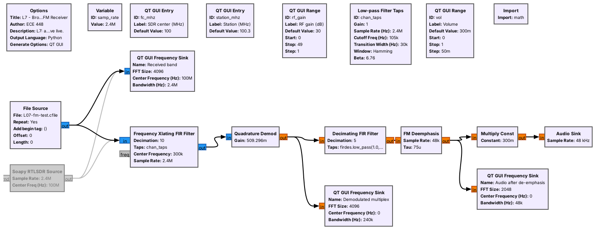
The source is a File Source or the RTL-SDR.
A channel filter, a demodulator, an audio filter, and de-emphasis feed the speaker.
L07-wbfm-rx.grc is the whole receiver in six processing blocks. The File Source plays a recording, and the Soapy RTLSDR Source receives live; GRC grays it out because we disabled it. Both feed the same channel filter, so switching from a file to the air means disabling one source and enabling the other. Neither path needs a Throttle: the Audio Sink takes exactly 48,000 samples per second, as in Lesson 6, and that paces the File Source too.
The two variables at the top tie the receiver to the radio. fc_mhz is the frequency we tune the SDR to, or the center frequency we recorded the file at, and station_mhz is the station we want. The next four frames describe the chain one block at a time.
Channel Filter and Decimation
The Frequency Xlating FIR Filter shifts the station to 0 Hz, filters, and decimates.
It shifts by \(f_\text{station} - f_c\) = 300 kHz and passes ±90 kHz.
Decimating by 10 leaves 240 kS/s.
The station sits 300 kHz above the center of the capture, and everything else in the 2.4 MHz is something we do not want. The Frequency Xlating FIR Filter does three jobs in one block. It multiplies by a complex tone at \(-300\) kHz, which moves the station to 0 Hz, the same frequency shift as Lesson 6’s coherent receiver. It applies a low-pass filter, here a 105 kHz cutoff with a 30 kHz transition, which passes ±90 kHz and is 28 dB down by ±120 kHz, far enough to remove the station at 99.5 MHz. Then it keeps every tenth sample.
Decimating by 10 leaves 240,000 samples per second. That rate holds everything the filter passes, and it holds the whole demodulated signal of the next frames, which reaches 59.4 kHz. Its center frequency is the expression (station_mhz - fc_mhz) * 1e6, so typing 99.5 into Station tunes the other station.
The Quadrature Demodulator
The phase step between samples is the frequency.
With this gain, 75 kHz of deviation gives an output of 1.
After the channel filter the station is a complex signal whose phase turns faster or slower as the frequency moves. The Quadrature Demod block measures how far the phase turns from one sample to the next, which is the frequency at that instant.
The gain scales that frequency into a convenient number. With the gain above, a carrier 75 kHz above center produces an output of exactly 1, so the output is the transmitted message at its original scale. The block ignores amplitude entirely, which is why an FM receiver needs no AGC, and why a weakening FM station keeps its volume until the noise gets strong enough to break it up, as a later frame shows.
The Multiplex
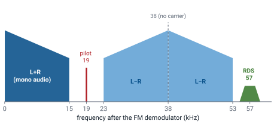
The demodulator’s output is the multiplex, which carries more than audio.
The pilot is at 19 kHz, stereo is DSB-SC at 38 kHz, and RDS is at 57 kHz.
The demodulator does not output audio; it outputs whatever the station put on its carrier, which is several signals side by side. The mono audio, the sum of the left and right channels, fills 0 to 15 kHz, so a mono receiver works by keeping only that band. A stereo station adds the difference of the two channels as DSB-SC on 38 kHz, the signal of Lesson 6 that needs carrier recovery, and sends a 19 kHz pilot so receivers can rebuild the 38 kHz carrier by doubling it. Above that, at 57 kHz, three times the pilot, sits RDS.
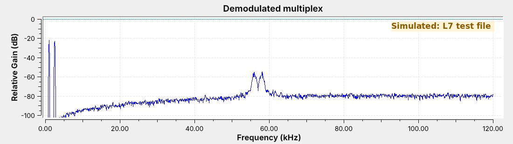
The frequency sink above is the multiplex of the test station. It has the two message tones and RDS, and no pilot or stereo, because the test station is mono. Its RDS data still sets the stereo flag on the panel of a later frame; that flag is a bit the encoder sends, not a property of the audio. Notice that the noise floor rises with frequency: FM noise at the demodulator’s output grows with distance from the carrier, so the top of the audio band, the stereo signal, and RDS all receive more noise than the bottom of the audio. A live stereo station shows the pilot line and the stereo band on the same display.
Audio and De-emphasis
A 15 kHz low-pass filter decimates by 5, from 240 to 48 kS/s.
De-emphasis (75 μs) cuts the treble the transmitter boosted.
It removes the high-frequency noise along with the boost.
A Decimating FIR Filter keeps the mono band, 0 to 15 kHz with a 3 kHz transition, and decimates by 5 to the sound card’s 48 kHz. Every other part of the multiplex is above 15 kHz, so this one filter removes the pilot, the stereo signal, and RDS.
The transmitter boosts the treble of its audio before modulating, a step called pre-emphasis. The FM Deemphasis block applies the opposite filter, set by a 75 μs time constant with its corner at 2.1 kHz, which restores the original audio balance. Because the noise rises with frequency, cutting the treble at the receiver removes noise where the noise is strongest. Europe uses 50 μs, so a European station received with the US setting sounds slightly dull but is otherwise correct.
Running the Receiver
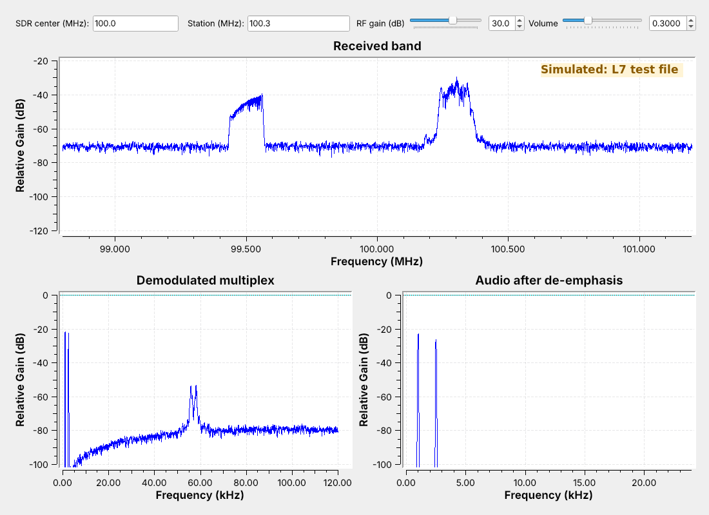
The audio shows the two tones at 1 and 2.5 kHz.
Setting Station to 99.5 plays a different test tone.
The figure is the receiver running on the test file. The bottom right sink is the audio after de-emphasis, with the 1 kHz and 2.5 kHz tones of the message and nothing else above the floor, which is the check that the receiver works: the demodulated audio matches what the test transmitter sent. Type 99.5 into Station and the audio changes to the second station’s single, different test tone.
To use your own L5 capture, set the File Source’s file to fm_capture.cfile, type the center frequency you recorded at into SDR center, and set Station to the station you centered. To receive live, disable the File Source, enable the RTL-SDR Source, and run it again. A real station’s audio sink will show music or speech rather than two lines.
RDS
The Radio Data System sends 1187.5 bits per second on 57 kHz.
It is BPSK: a DSB-SC signal that needs its carrier recovered.
It carries the station name, program type, and text.
The Radio Data System (RDS, called RBDS in North America) adds a slow digital channel to an FM station. It runs at 1187.5 bits per second, which is 57 kHz divided by 48, on a 57 kHz subcarrier. The bits ride the subcarrier as BPSK, which is a DSB-SC signal like Lesson 6’s, so the receiver has to recover the carrier. The bits are also differentially coded, so the receiver needs only the changes between bits, and a 180° error in the recovered carrier does no harm.
The data arrives in short groups, a fraction of a second each. The PI code is the station’s identifier, the PS name is the eight characters a car radio displays, sent two per group, and the radiotext is up to 64 characters of free text.
Decoding RDS
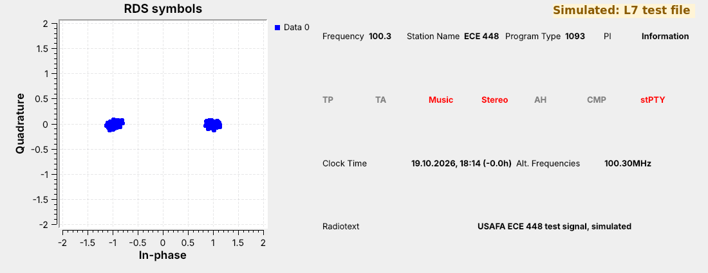
Two clusters show BPSK with its carrier recovered.
The panel shows the station name, “ECE 448”, and the radiotext.
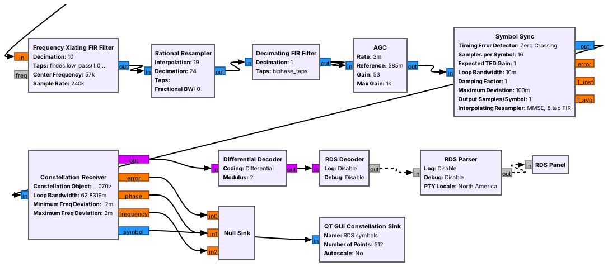
L07-rds-rx.grc is the WBFM receiver with an RDS branch added to the demodulator’s output, following the receiver that ships with gr-rds. A second Frequency Xlating FIR Filter moves 57 kHz to 0 Hz and decimates to 24 kHz, and a Rational Resampler converts to 19 kHz, which is exactly 16 samples per bit. A filter matched to the RDS symbol shape, an AGC, and a Symbol Sync find the bit timing, and the Constellation Receiver recovers the subcarrier’s phase, which is the carrier recovery Lesson 6 said DSB-SC needs. The two tight clusters on the constellation show it working. A Differential Decoder undoes the differential coding, and the three gr-rds blocks find the groups, check them, and display what they carry.
The panel shows “ECE 448” and the test transmitter’s radiotext. It also shows the station’s PI code, 1093 in hexadecimal, under “Program Type” and the program type under “PI”: the panel swaps those two labels, so read them the other way around on a live station too. The RDS blocks come from gr-rds, which radioconda installs as gnuradio-rds.
An AM Receiver
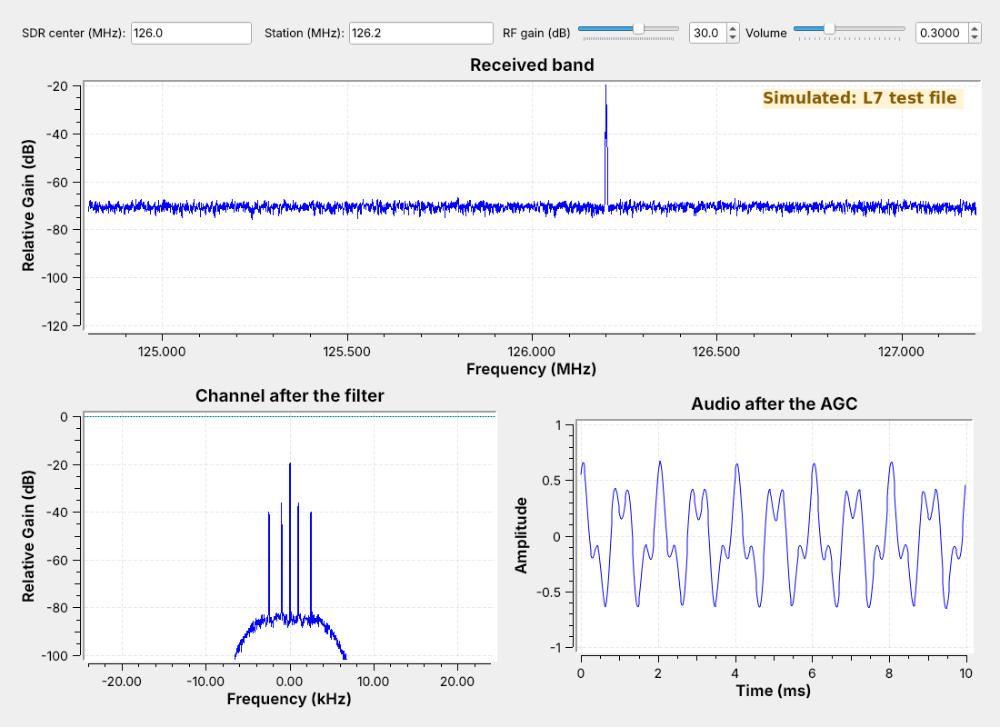
Aircraft voice and ATIS use AM from 118 to 137 MHz.
The filter cuts off at 5 kHz and decimates 2.4 MS/s by 50 to 48 kS/s.
Complex to Mag is the envelope detector.
Aircraft and control towers talk in AM between 118 and 137 MHz, and most airports with a control tower broadcast an ATIS, a recorded loop of the current weather and runway in use, continuously on one of those frequencies. That makes ATIS a steady signal to receive, as Lesson 6 suggested. L07-am-rx.grc has the same front end as the FM receiver: a File Source or the RTL-SDR, and a Frequency Xlating FIR Filter. This one cuts off around 5 kHz, just above the 3 kHz voice band, and it decimates by 50, from 2.4 MS/s straight to the sound card’s 48 kS/s.
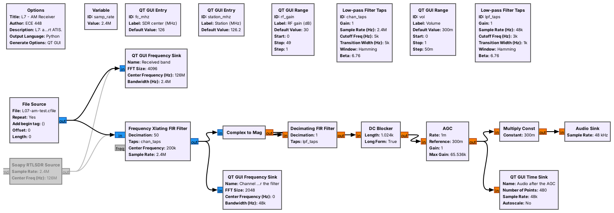
After the filter, the AM station is a complex signal with its carrier at 0 Hz, and its envelope is the magnitude of each sample. Complex to Mag replaces the Abs block of Lesson 6, and the rest is the L6 receiver: the same 3 kHz low-pass taps and a DC Blocker that removes the carrier’s constant. An AGC block then holds the audio level steady, because a station’s strength depends on the aircraft’s distance and an AM receiver’s output depends on it directly. The figure shows the receiver on L07-am-test.cfile, which carries the L6 two-tone message at \(m\) = 0.5; the audio repeats every 2 ms, as it did in Lesson 6.
AM and FM in the Same Noise
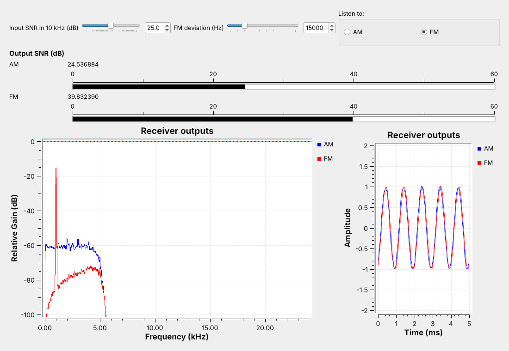
Both carry the same tone at the same power in the same noise.
With a strong signal, FM’s meter reads well above AM’s.
L07-am-vs-fm.grc sends one 1 kHz tone two ways with the same transmitted power: as AM at \(m\) = 1, the best case from Lesson 6, and as FM. The figure runs FM at 15 kHz deviation with the Input SNR at 25 dB. Both go through the same noise. Each receiver filters to its own channel, 10 kHz for AM and a wider one for FM, and then the same 5 kHz audio filter. The Input SNR slider sets how strong the signal is against the noise in a 10 kHz channel, and two meters show each receiver’s output SNR, the tone against everything else in its audio. The Listen to buttons switch the speaker between the two.

With this strong signal the FM output is clearly the cleaner one, even though the FM receiver’s wider channel lets in more noise. The spectrum shows it: FM’s noise floor sits well under AM’s. Drag the deviation up and FM’s meter climbs further; drag it down and most of the advantage goes away. FM buys a cleaner output with bandwidth.
Turning the Noise Up
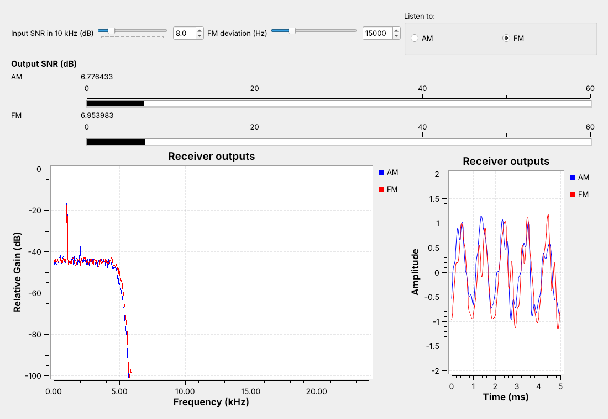
Drag Input SNR down with the speaker on FM.
Far enough down, FM breaks into clicks and its advantage is gone.
AM only gets steadily noisier.
Now drag the Input SNR slider down with the speaker on FM. The FM output stays clean longer than AM’s does, and then it starts to crackle with clicks and its meter drops quickly. In the figure, at 8 dB with 15 kHz deviation, the two meters read about the same, and both tones on the time sink are ragged. That sudden collapse is the point where FM breaks into clicks: FM’s advantage lasts only while the signal stays well above the noise in its own, wider channel. AM has no such point; its hiss rises steadily as the slider comes down, and the tone stays recognizable. Repeat the sweep at a narrower and a wider deviation: the wider the deviation, the cleaner FM sounds when the signal is strong, and the sooner it breaks up as the noise rises.
That trade is why broadcast FM and aircraft radios chose differently. A broadcast station is strong and has a 200 kHz channel to fill, so it uses FM. Aircraft use AM because a weak AM signal stays intelligible, and because two aircraft transmitting at once are both heard, where an FM receiver would lock onto the stronger one.
FM Explorer
The left panel shows the spectrum of a carrier frequency modulated by one tone, with Carson’s band shaded; the right panel shows how much of the signal falls inside a band of each width. Start with the L7 flowgraph preset. Raise the deviation and watch the lines spread wider; raise the tone frequency and watch them move apart. Whatever the settings, nearly all of the signal stays inside the shaded band, which is why Carson’s rule is good enough to set a channel filter.
Key Point
FM spreads the message over a wider channel and, while the signal is strong, comes out cleaner than AM. Turn the noise up far enough and FM breaks up into clicks, sooner for a wider channel; AM just gets noisier.
Find the Station
SDR Flex: select an FM signal, demodulate it.
Live: tune the FM band in GQRX and choose WFM (stereo).
Turn on RDS, read the name, and note the frequency.
Then try NFM on NOAA weather, 162.400–162.550 MHz.
Before building anything on the air, find the station with a ready-made receiver. In SDR Flex, drag across an FM signal in an example capture and choose the FM demodulator. Its RDS decoder is an external program that needs the full SDR Flex server. The browser version has no live radio, so the live station uses GQRX. GQRX runs on the same RTL-SDR: choose the RTL-SDR as the input device, start it, and click a strong station on the spectrum or waterfall between 88 and 108 MHz. Set the mode to WFM (stereo); the audio plays, and the stereo indicator lights if the station sends a pilot. Open GQRX’s RDS panel and turn decoding on, and within a few seconds it shows the station name.
GQRX comes with radioconda; if it does not start on your laptop, SDR++ has the same controls. Write down the station’s frequency and name, and close GQRX, since only one program can use the RTL-SDR at a time. The next step builds the same receiver in GRC on that station, and the name GQRX showed is the check that the RDS flowgraph decodes it correctly.
While GQRX is open, hear narrowband FM too. Set the mode to NFM and tune a NOAA weather radio channel, 162.400 to 162.550 MHz in 25 kHz steps, which broadcasts continuously; this is receive only, like everything in this lesson. The deviation is about 5 kHz instead of 75, so the channel is a few tens of kilohertz wide instead of 200, and the same voice in WFM mode would sound faint and thin.
On the SDR
Tune the SDR a few hundred kHz off the station, away from the DC spike.
Set RF gain from your L5 gain table.
Receiving is unrestricted, and the RTL-SDR receives only.
On the air, the receivers need three settings from Lesson 5. Tune the SDR a few hundred kilohertz away from the station, so the RTL-SDR’s DC spike at the center stays out of the channel filter, and type the station’s real frequency into Station. A shift under about 100 kHz leaves the DC spike inside the channel, where it shows up as a tone or hum. Set the RF gain slider to the highest gain in your L5 Lab gain table at which no new signals appeared between stations. For ATIS, look up the airport’s frequency in the FAA Chart Supplement or on a sectional chart, and expect a weaker signal than broadcast FM, because aircraft band stations are lower in power and need line of sight.
RDS needs a stronger signal than the audio does, because its 57 kHz subcarrier sits where the multiplex noise is highest. If the station name never appears, raise the gain or choose a stronger station before changing the flowgraph. As Lesson 2 said, receiving is unrestricted and transmitting is not; the RTL-SDR receives only, and nothing in this lesson transmits.
Downloads and Sources
This lesson follows:
GNU Radio wiki, Simulation example: Narrowband FM transceiver
SDR Flex, for practicing select-and-demodulate on example captures
GQRX, for finding a station before building a receiver for it
Downloads:
L07-fm-test-tx.grc: writes
L07-fm-test.cfile, 4 s (76.8 MB) of a simulated FM band around 100.0 MHz with two stations, one carrying RDS. It needs gr-rds. Run it once; it stops on its own.L07-am-test-tx.grc: writes
L07-am-test.cfile, 4 s (76.8 MB) of a simulated AM station at 126.2 MHz carrying the L6 two-tone message.L07-wbfm-rx.grc: the broadcast FM receiver, playing the test file, your L5 capture, or the RTL-SDR.
L07-rds-rx.grc: the same receiver with the RDS decoder. It also needs gr-rds.
L07-am-rx.grc: the AM receiver for the aircraft band.
L07-am-vs-fm.grc: one tone as AM and as FM in the same noise, with output SNR meters and an Input SNR slider. It needs no hardware.
Put every file in one folder; GRC runs a flowgraph from its own folder, so the receivers find the test files there. Each receiver plays through your laptop’s speakers; start with the volume low. gr-rds comes with radioconda; if GRC reports the RDS blocks missing, run mamba install gnuradio-rds from the radioconda prompt.
Summary
Receiver |
Front end |
Demodulator |
After it |
Number to remember |
|---|---|---|---|---|
WBFM |
Xlating FIR, ±90 kHz, ÷10 |
Quadrature Demod, gain \(f_s/2\pi\Delta f\) |
15 kHz low-pass ÷5, de-emphasis 75 μs |
about 180 kHz wide, 200 kHz apart |
RDS |
Xlating FIR at 57 kHz, resample to 19 kHz |
Symbol Sync, Constellation Receiver |
Differential Decoder, gr-rds |
1187.5 bit/s on 57 kHz |
AM |
Xlating FIR, ±5 kHz, ÷50 |
Complex to Mag |
3 kHz low-pass, DC Blocker, AGC |
118 to 137 MHz |
AM vs. FM |
same power, same noise |
output SNR meters |
FM cleaner until the noise breaks it up |
Practice
Looking Ahead
The L7 Lab plays your L5 capture, then receives live FM, RDS, and ATIS.
Lesson 8 sends bits by switching frequency: FSK.
Today we built a broadcast FM receiver, added an RDS decoder to it, built an AM receiver for the aircraft band, and watched what FM’s extra bandwidth does as the noise goes up. The L7 Lab is the bench version: play your own L5 capture through the receiver, receive a live station and its RDS name, receive an ATIS broadcast, and turn the noise up on AM and FM yourself.
An extension from the 2025 course: build a dual FM receiver, two Frequency Xlating FIR Filters on one capture, that plays two stations at once.
Lesson 8 moves from analog to digital modulation. Its first signal, frequency-shift keying, is FM with a message that takes only two values, so its receiver uses the same quadrature demodulator as today’s.